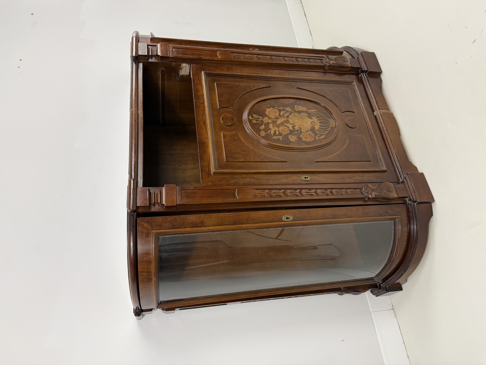
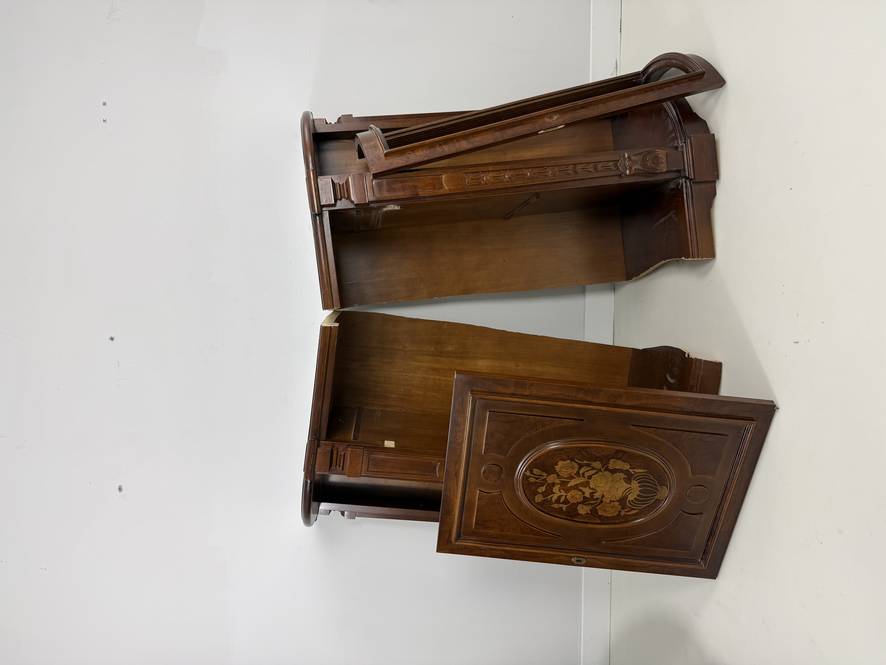
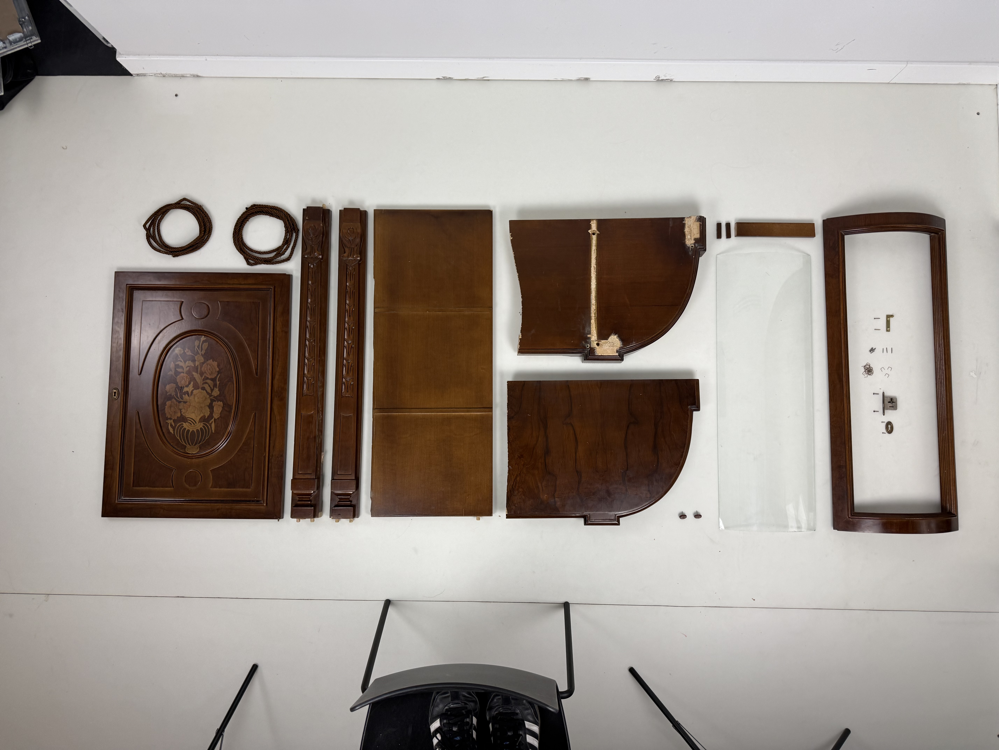
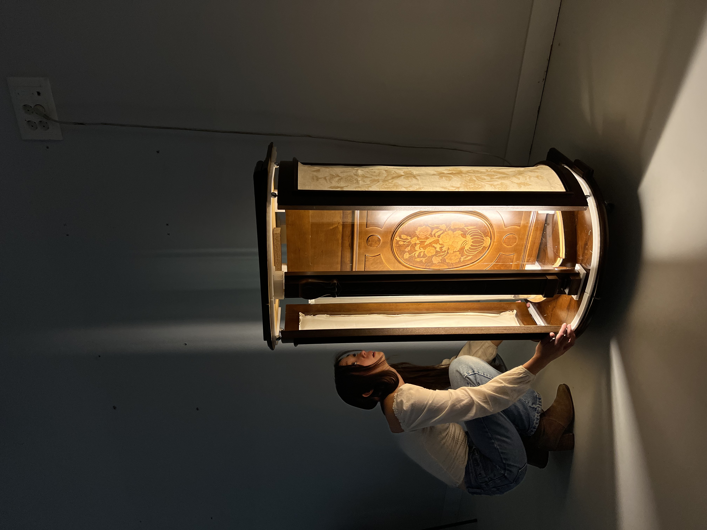
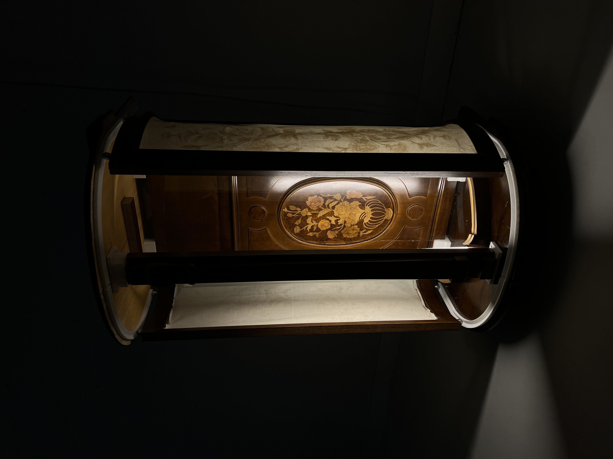
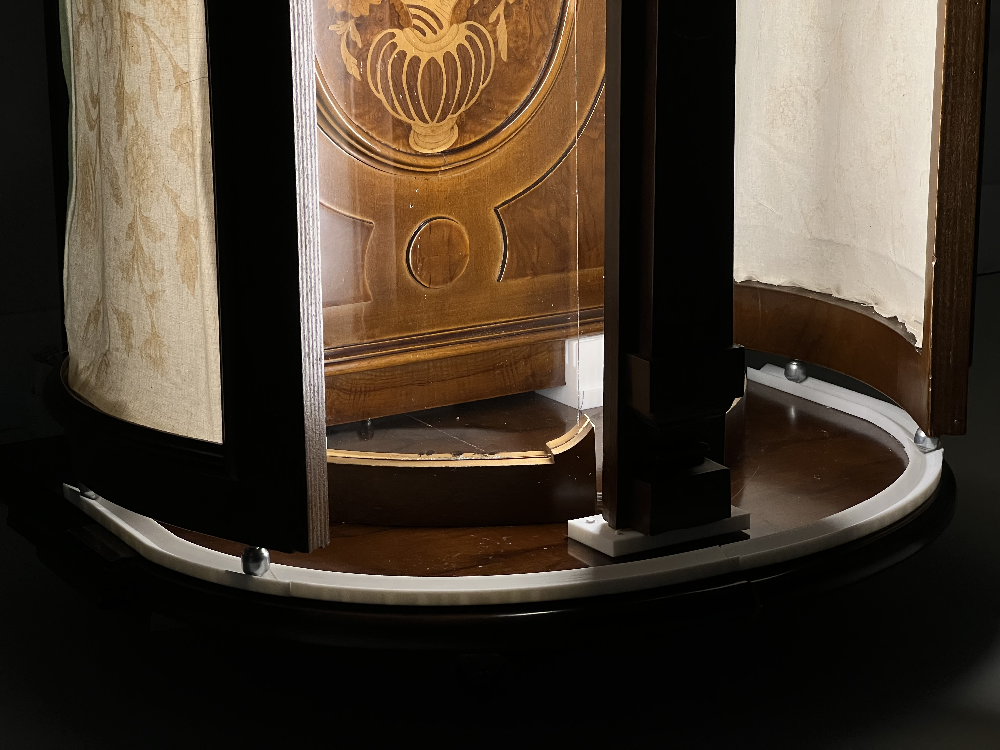

Sergio was tasked with clearing out his mothers apartment after her passing. A difficult task without the pressure of grief. This project was an attempt to bring new life to one of Pilar's (Sergio's mother) favorite pieces. The cabinet was too large to remove and had to be cut in half. instead of letting the piece be thrown away, we deconstructed and reimagined the piece into a directional lamp. (In collaboration with Sofia Diaz, Isabel Sanchez, and Alice Van-Rost)





